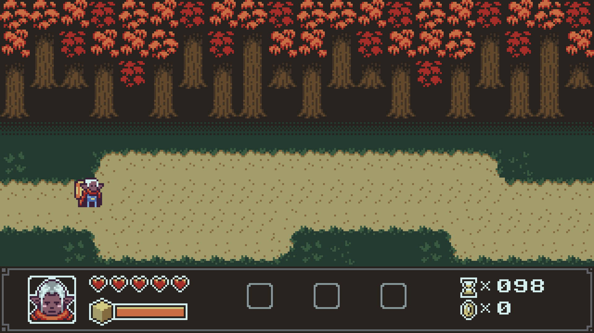
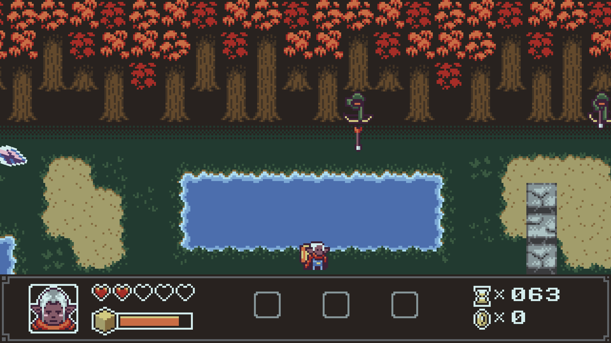
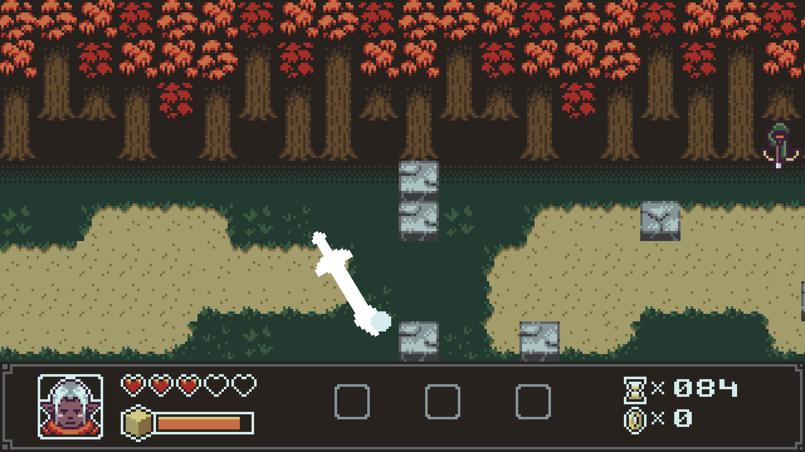
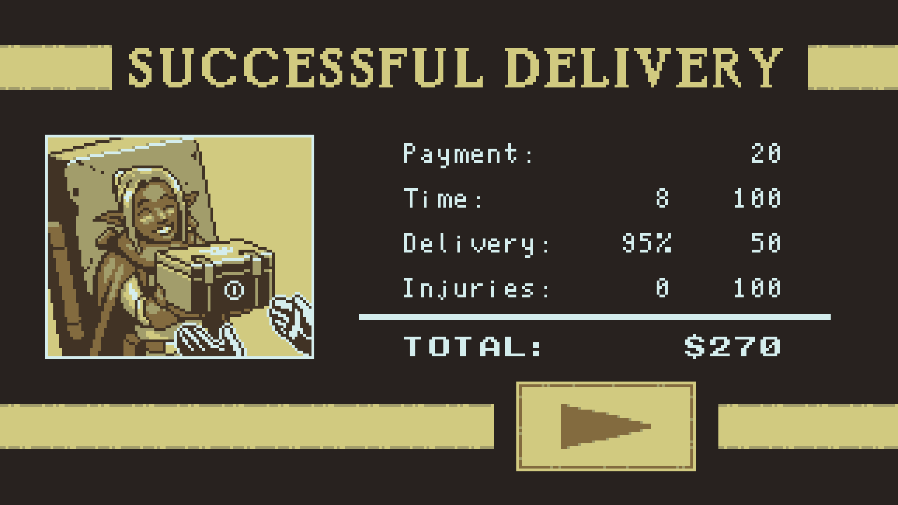

This is the main screen when you open the game with a play
button on the left and a credits button on the right. It needs a lot of improvement,
because it lacks a setting to adjust in-game audio, controls, and other basic elements that are necessary in a setting.
When you press play, the next screen shows a
picture of Amina with a biography on the right, which introduces the main objective. In this game's biography, Amina is an explorer who works as a courier for the
Fireball Express company. She is the only one the user can control.

Once you loaded the level. Amina (the only character the user can control) is on the left.
The only controls the user can press are "WASD" to move her up, down, left, right.
There is a box on the screen where the user can see how many lives they have left, along with a time limit and how many coins were picked up on the right .
Even though there really isn't any coins in the game directly. A forest full of brown trees with autumn looking leaves, gives the
game atmosphere an autumn feel to it. Is the basic element of the environment that combines the Forest with itself to give the player an
immersive 2-D pixelated survival game experience.

Archers shoot at Amina from the top of the screen,
which spawn in many arbitrary directions, they act as NPC's. Lakes and Rivers are another obstacle the main character must move around,
and is what also obstructs the chararacter from moving in a constant direction.
If the character falls into the water, it slows there movement. The Brick Wall is an obstacle the character faces in the game.
The enemy flying sword can be used intuitively to break down the wall, while it's coming after you.

This is the magical flying sword, which is the main enemy the user must dodge throughout the duration of the level. Once you get to the end of the level,
The Bear is the boss that the user will encounters towards the end.

This is the screen that pops up after you defeat the bear. Notice how the screen shows a drop down of Time (how long it took to beat the level), Delivery (If the package got wet then score decreases), and Injuries (How many times the player took damage.
My Review
2.5/5
This game has a lot of potential, but definitely needs more improvement or at least more levels added to it. The UI could use some improvement as well. Sometimes though rarely, my
keyboard doesn’t fully interact with the character or makes him unable to move, like a glitch. You could also add a leaderboard or best
high scores to the main menu and a map (if there are more levels), in terms of settings. I understand that because it is an ".io" type game, it is still under construction and improvement.
However, a good game consists of better more challenging levels, with more adversaries,
as well as improving the main menu, so that there are more options than just the play button and the credits button. Also, I am not really enthusiastic about the game's overall objective, considering it looks and feels a lot like a Super Mario game. If you
want to make a unique pixelated survival game with unique goals than you have to be more creative in terms of controls, enemies, and obstacles. I can give them credit in terms of environment textures, such as adding a forest and grassy areas, as well as scriptwriting. The fact the user can use this
NPC sword figure to destroy and beat enemies, after it's main goal is to kill you, is great writing.
In terms of the game’s graphics, it was actually very simplistic. The audio and visuals remind me of that of an arcade game, or a game distributed in the 1980’s. There were multiple moving characters,
objects, and obstacles all of them looking to stop you from reaching your destination, putting the user (myself) under some stress in beating the game. Therefore, creating the illusion
of being immersed in a world for a brief period of time.
The settings are extremely simple. When you first open up the game, it takes you to a menu with only two buttons.
One of the buttons is the “play a new game” button and the other one is just the credits with the developers and music.
Since it was only a mini game there wasn’t a whole
lot of other objects or graphics to interact with in the settings itself.
You can only control one character. You easily figure out what character you’re controlling just by moving “WASD” on your keyboard, the character responds to the controls by running in all directions.
One of the main enemies are archers shooting at you from the top of the screen, which spawn in many arbitrary directions, which are spawned by the computer (NPC’s).
The main objective of the game is to delivery a certain package when given 5 lives and making it across the map until you reach the end. The game shares multiple similarities to that of Super Mario or Sonic.
The only difference is that towards the end of the map you face a boss (a bear) that you must kill using this magical
flying sword that you can’t control and that is always targeting you.
Most of the objects the main player interacts with is part of the environment; the obstacles that he runs into. These obstacles include pixelated brick walls, bridges, rivers, etc.
In terms of meta experience, the game doesn’t have many references to any past or future developments in itself. However, like I said before, it does compliment other famous games, like Super Mario, in terms of game design.
In terms of the games figurative nature, you can make the assumption that the objective of going from place to place is sort of a daily routine we all do everyday in order to survive or at least stay relevant in our lives.
The feelings of being under pressure all the time for meeting
deadlines and quotas is consistent in both game and reality.